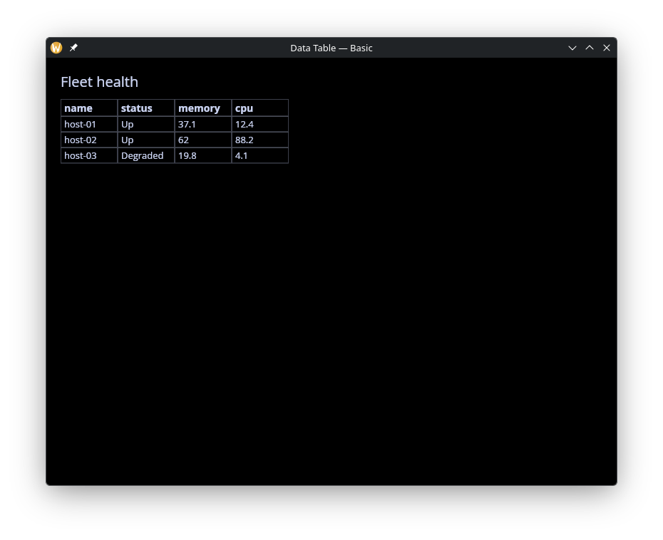
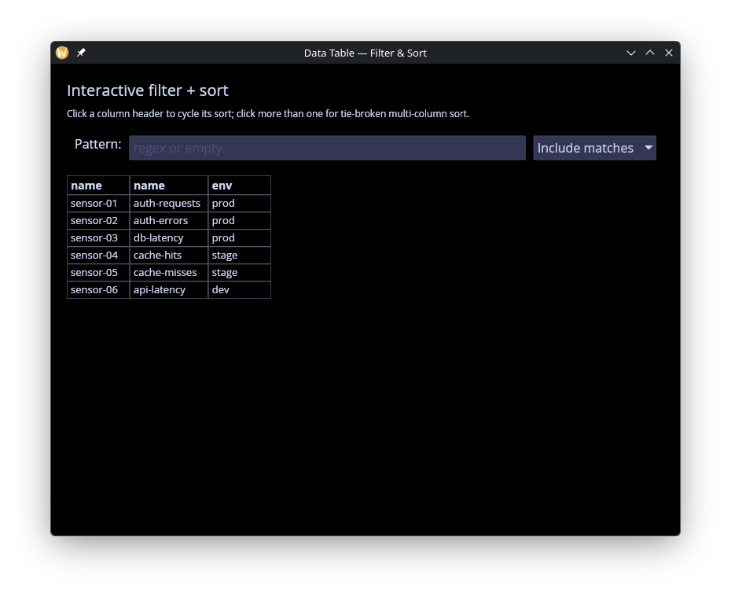
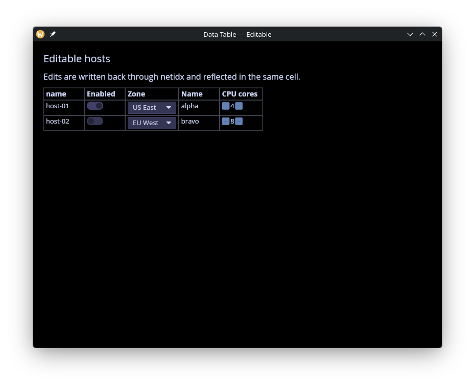
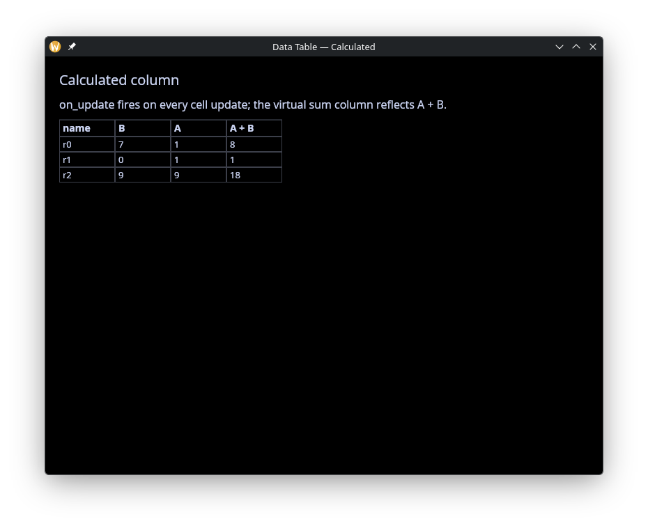
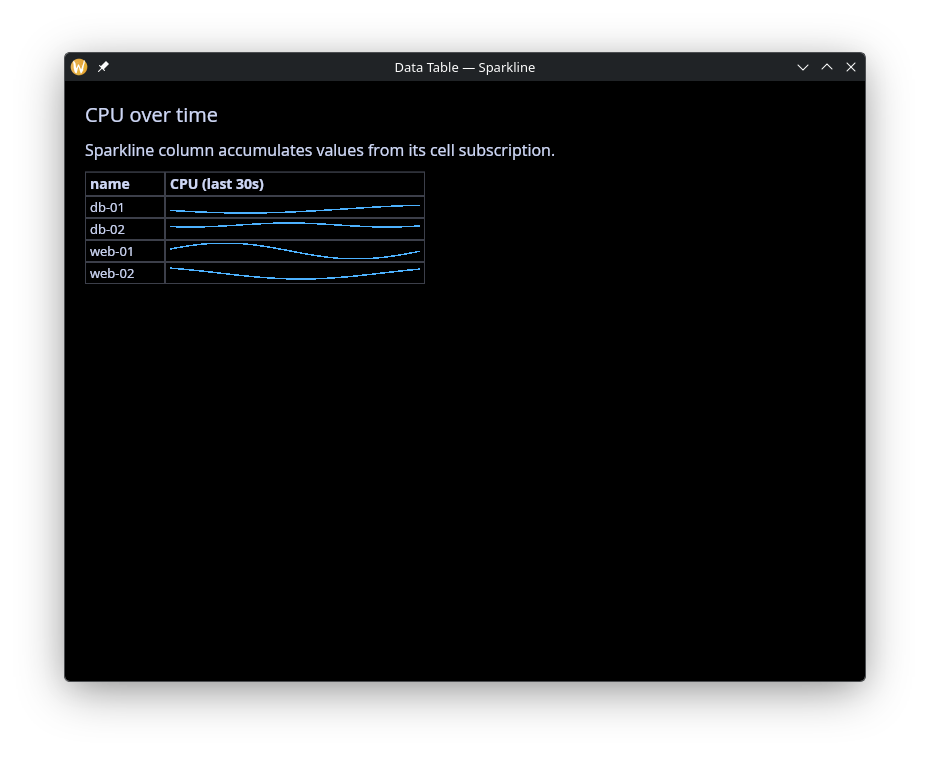
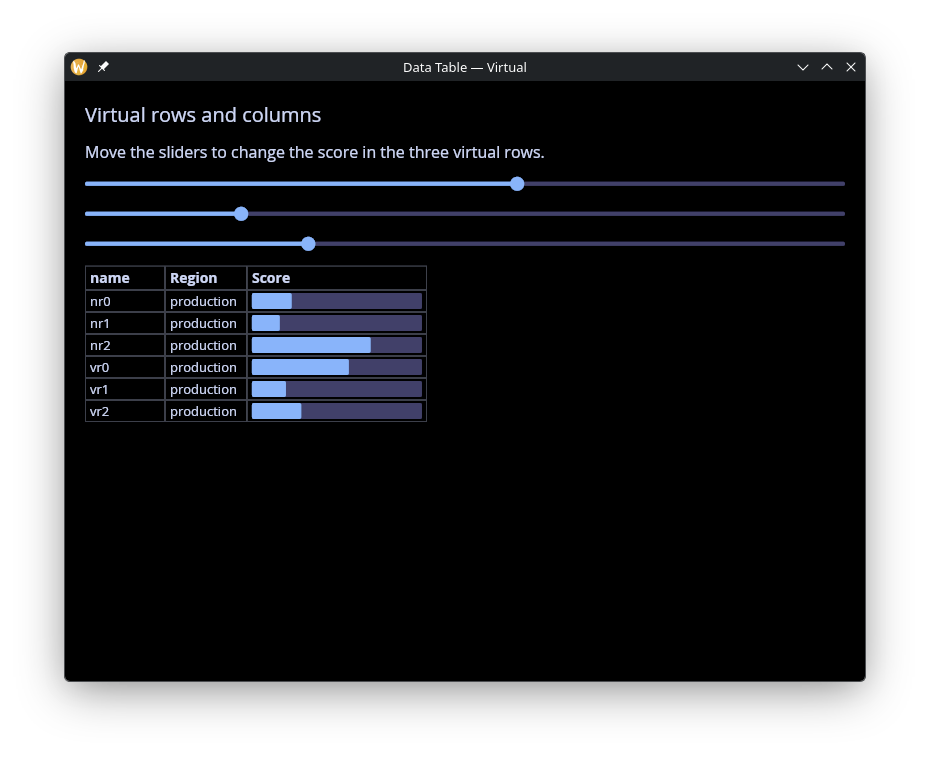
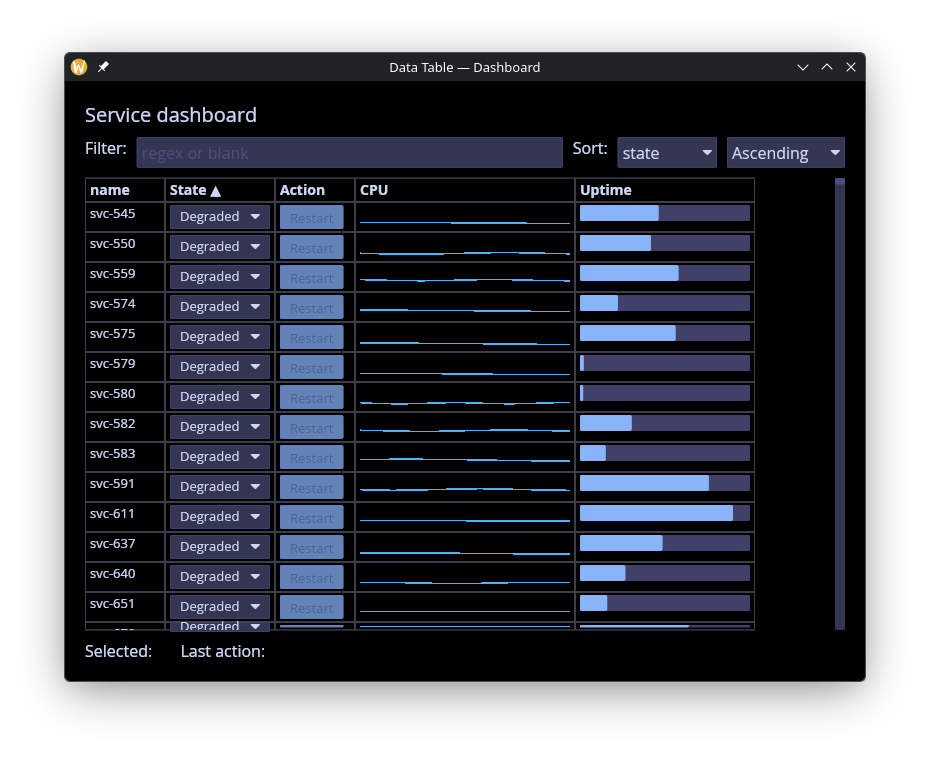

The Data Table Widget
A spreadsheet-style widget that renders a Table value as a grid of
live-subscribed cells. Columns are typed: each one picks the editor
(text, toggle, pick-list, spinner), visualization (progress bar,
sparkline), or action (button) that cells should use. Row sort, row
filter, column widths, and the selection set are all controlled from
graphix — the widget is the rendering surface and the subscription
manager, nothing more.
The Table value is the single source of truth for what columns
exist, in what order, and how each one is sourced. Columns are
declared as either bare strings (shorthand for a default Text column
with `Netidx source named after the string) or full
ColumnSpec structs. Bare strings let the output of
sys::net::list_table (which has columns: Array<string>) flow
straight through; mixed arrays are fine.
Rows that are absolute netidx paths trigger live subscriptions for
every column whose source is `Netidx. Non-absolute row names
render as virtual rows. Columns whose source is a string or
Map<string, Any> skip subscription entirely and read their values
from the source ref.
With rows and no declared columns, the table shows each row path’s own value
in one synthesized column. Its “value” header does not invoke on_header_click.
Interface
use super::Widget;
type SortDirection = [`Ascending, `Descending];
type SortBy = { column: string, direction: SortDirection };
type ColumnType = [
`Text({ on_edit: [fn(#path: string, #value: Any) -> Any, null] }),
`Toggle({ on_edit: [fn(#path: string, #value: bool) -> Any, null] }),
`Combo({
choices: Array<{ id: string, label: string }>,
on_edit: [fn(#path: string, #value: string) -> Any, null]
}),
`Spin({
min: f64,
max: f64,
increment: f64,
on_edit: [fn(#path: string, #value: f64) -> Any, null]
}),
`Progress,
`Button({
on_click: [fn(#path: string, #value: Any) -> Any, null]
}),
`Sparkline({
history_seconds: f64,
min: [f64, null],
max: [f64, null]
})
];
/// Where a column's per-cell values come from.
///
/// - `` `Netidx(fallback) ``: subscribe to `<row_path>/<column_name>`
/// for every absolute-path row. The fallback is the value rendered
/// for cells whose subscription is pending or `Unsubscribed`, AND
/// for virtual rows (non-absolute paths), which never subscribe.
/// It is one of:
/// - `null`: no fallback — cells render blank until the
/// subscription resolves, and virtual rows render blank.
/// - `string`: a uniform placeholder used for every cell.
/// - `Map<string, Any>`: per-row fallback keyed by row basename
/// — virtual rows pick up their map entry, and absolute rows
/// fall back to it before the subscription delivers a value.
/// - `string`: a uniform default — every cell renders this text. No
/// subscription. Useful for static fields and computed columns
/// where one value applies to all rows.
/// - `Map<string, Any>`: per-row defaults keyed by row basename. No
/// subscription on any row. Useful for purely "calculated"
/// columns whose values are derived in graphix and shouldn't
/// ever subscribe.
type Source = [`Netidx([null, string, Map<string, Any>]), string, Map<string, Any>];
type ColumnSpec = {
name: string,
typ: ColumnType,
display_name: [string, null],
source: &Source,
on_resize: &[fn(width: f64) -> Any, null],
width: &[f64, null]
};
/// The data table's content. Rows are netidx paths (absolute paths
/// drive subscriptions; non-absolute rows are virtual). Columns are
/// either bare strings (shorthand for a default Text column with
/// `` `Netidx `` source named after the string) or full `ColumnSpec`
/// structs with explicit type, source, width, etc. Bare strings let
/// `sys::net::Table` (which has `columns: Array<string>`) be passed
/// straight through; mixed arrays are fine.
///
/// Display order is exactly the order of entries in `columns` —
/// virtual and subscribed columns are not segregated.
type Table = {
rows: Array<string>,
columns: Array<[string, ColumnSpec]>
};
type DataTable = {
on_activate: &[fn(#path: string) -> Any, null],
on_header_click: &[fn(#column: string) -> Any, null],
on_select: &[fn(#path: string) -> Any, null],
on_update: &[fn(#path: string, #value: Primitive) -> Any, null],
selection: &Array<string>,
show_row_name: &bool,
sort_by: &Array<SortBy>,
table: &Table
};
/// A data table that displays rows and columns of data.
///
/// Rows that are absolute netidx paths trigger live subscriptions to
/// `<row_path>/<column_name>` for every column whose `source` is
/// `` `Netidx ``. Rows that are not absolute paths are virtual — they
/// never subscribe and render the column source's fallback value
/// (either the `Netidx` payload's per-row map / uniform string, or
/// the bare `string` / `Map<string, Any>` source).
///
/// The caller owns the shape of the Table: row order, column order,
/// hidden vs. shown, virtual vs. subscribed — all of that lives in
/// the `Table` value the caller passes in.
///
/// `sort_by` is a list of sort keys applied in order: the first key
/// is the primary sort, subsequent keys break ties. Empty list (the
/// default) preserves the Table's row order. Sort values come from
/// the column's source — a live subscription when source is
/// `` `Netidx ``, or the source's stored value otherwise. A column the
/// Table does not list sorts by the netidx value at
/// `<row_path>/<column>`. Numbers sort before text, NaN below every
/// number, text by its bytes.
val data_table: fn(
?#sort_by: &Array<SortBy>,
?#selection: &Array<string>,
?#show_row_name: &bool,
?#on_select: [fn(#path: string) -> Any, null],
?#on_activate: [fn(#path: string) -> Any, null],
?#on_header_click: [fn(#column: string) -> Any, null],
?#on_update: [fn(#path: string, #value: Primitive) -> Any, null],
#table: &Table
) -> Widget;
/// Build a `Text` ColumnSpec. With no `on_edit` the cell is read-only.
val text_column: fn(
#name: string,
?#on_edit: [fn(#path: string, #value: Any) -> Any, null],
?#display_name: [string, null],
?#source: &Source,
?#on_resize: [fn(width: f64) -> Any, null],
?#width: &[f64, null]
) -> ColumnSpec;
/// Build a `Toggle` ColumnSpec for boolean cells.
val toggle_column: fn(
#name: string,
?#on_edit: [fn(#path: string, #value: bool) -> Any, null],
?#display_name: [string, null],
?#source: &Source,
?#on_resize: [fn(width: f64) -> Any, null],
?#width: &[f64, null]
) -> ColumnSpec;
/// Build a `Combo` ColumnSpec. `choices` is the picklist; each entry's
/// `id` is the value written and `label` is what the user sees.
val combo_column: fn(
#name: string,
#choices: Array<{ id: string, label: string }>,
?#on_edit: [fn(#path: string, #value: string) -> Any, null],
?#display_name: [string, null],
?#source: &Source,
?#on_resize: [fn(width: f64) -> Any, null],
?#width: &[f64, null]
) -> ColumnSpec;
/// Build a `Spin` ColumnSpec for bounded numeric input.
val spin_column: fn(
#name: string,
#min: f64,
#max: f64,
#increment: f64,
?#on_edit: [fn(#path: string, #value: f64) -> Any, null],
?#display_name: [string, null],
?#source: &Source,
?#on_resize: [fn(width: f64) -> Any, null],
?#width: &[f64, null]
) -> ColumnSpec;
/// Build a read-only `Progress` ColumnSpec. Cell values are clamped to [0, 1].
val progress_column: fn(
#name: string,
?#display_name: [string, null],
?#source: &Source,
?#on_resize: [fn(width: f64) -> Any, null],
?#width: &[f64, null]
) -> ColumnSpec;
/// Build a `Button` ColumnSpec. Each cell renders as a button; clicking
/// fires `on_click` with the cell's path and current value.
val button_column: fn(
#name: string,
?#on_click: [fn(#path: string, #value: Any) -> Any, null],
?#display_name: [string, null],
?#source: &Source,
?#on_resize: [fn(width: f64) -> Any, null],
?#width: &[f64, null]
) -> ColumnSpec;
/// Build a `Sparkline` ColumnSpec. Each cell accumulates values from its
/// subscription for `history_seconds` and renders them as a rolling
/// chart. By default the y-axis is shared across every cell in the
/// column (auto-scaled to the union of all rows' values), so cells can
/// be compared visually. Pass `#min`/`#max` to fix the axis to a
/// caller-defined range instead.
val sparkline_column: fn(
#name: string,
#history_seconds: f64,
?#min: [f64, null],
?#max: [f64, null],
?#display_name: [string, null],
?#source: &Source,
?#on_resize: [fn(width: f64) -> Any, null],
?#width: &[f64, null]
) -> ColumnSpec;
data_table Parameters
-
#table-- The table shape:{ rows: Array<string>, columns: Array<[string, ColumnSpec]> }.sys::net::list_table(path)produces a value whosecolumns: Array<string>unifies with this type via the union element. The caller owns the shape: to filter, sort, hide, or reorder rows and columns — or to attach customColumnSpecs to specific columns — build theTablerecord in graphix and hand the result todata_table. Every change to this ref is reconciled against the current subscription set. -
#sort_by-- Array of sort keys applied in order. The first is the primary sort; later keys break ties. Empty list (the default) preserves theTable's row order. Sort values come from the column's source — a live subscription when source is`Netidx, or the source's stored value otherwise. -
#selection-- Controlled set of selected cell paths. For cells in the row-name column this is just"row_path"; for every other cell it is"row_path/col_name". The widget's own click / keyboard handlers never mutate this ref directly — they fire#on_selectand#on_activatecallbacks that the caller uses to drive the ref however they want (single-select, multi-select, toggle, etc.). -
#show_row_name-- Whentrue(the default) a synthesized leftmost column shows each row's basename (Path::basename(row)). Setfalsefor tables where the row identity is already carried by a regular column. -
#on_select-- Fired when a cell is clicked or keyboard navigation lands on a cell. The callback receives the full cell path ("row_path/col_name"for data cells,"row_path"for the row-name column). A click on a row-name cell fires#on_activateinstead when the table has one, so it reaches#on_selectonly in a table without#on_activate. -
#on_activate-- Fired when the user clicks a row-name cell, or presses Enter: for the selected cell's row whatever its column, or for the first row when nothing is selected. Receives the row path. -
#on_header_click-- Fired when the user clicks a data column's header label. Receives the column name. -
#on_update-- Fired for each update of a cell the table subscribes: rows within 50 and columns within two of the visible window, plus sort columns across every row. A cell scrolling back in re-delivers its current value. Useful to mirror live values into graphix state without subscribing separately, but an aggregate over every row (data_table_calculated.gx's sum) is complete only while the whole table is subscribed. Receives the cell path and new value.
Column Types
Each ColumnSpec carries a typ: ColumnType picked with one of the
helper constructors. All constructors take #name: string plus
their kind-specific args (#on_edit / #on_click / #choices /
etc.) and the common appearance options (#display_name, #source,
#width, #on_resize).
A column name must be one nonempty netidx path component. Use netidx path escaping for a slash inside a name. Invalid names are ignored with a warning.
-
text_column-- Plain text. Withon_editthe cell becomes editable: clicking a selected cell opens a text field;Entercommits the typed value viaon_edit,Escapecancels. The widget attempts to parse the buffer as a typed graphix value; if parsing fails the raw string is sent instead, so users can enterhellowithout quotes. -
toggle_column-- Renders a toggler. Cell values"true"or"1"turn it on. Withon_editthe user can flip the toggle. -
combo_column-- Drop-down with a fixed set ofchoices. Each choice has anid(the raw value published / sent back throughon_edit) and alabel(what the user sees). -
spin_column-- Numeric spinner withmin,max, andincrementbounds;on_editreceives the clamped new value. -
progress_column-- Read-only progress bar. Cell values are clamped to[0, 1]. -
button_column-- Each cell renders as a button labelled with the cell's current value.on_clickfires with the cell path and current value. -
sparkline_column-- Rolling-line visualization accumulating published values overhistory_seconds. Every cell uses the same rolling time axis, from now minushistory_secondsto now. The last value extends flat to now; the value at the window start is retained even when updates stop. While the newest sample is inside the window, idle frames advance at one horizontal pixel per redraw, capped at 60 frames per second. Once that sample reaches the window start, the flat line needs no further timed redraws. A new sample resumes them. By default the y-axis is shared across every cell in the column (auto-scaled to the union of all rows' values) so cells are visually comparable. Pass#min/#maxto fix the axis instead.
Column Widths and Resizing
Widths are controlled by two refs per column:
-
width: &[f64, null]-- WhenSome(f64)the column is pinned to that width (and the resize handle at the column header vanishes unless anon_resizecallback is also set). Whennullthe column auto-sizes to its content, with a per-column cap (default 300px). -
on_resize: &[fn(width: f64) -> Any, null]-- Fired while the user drags a column header's right edge. The callable receives the new pixel width. The reference is a&field so the callable can be swapped, nulled, or initialized reactively.
Double-clicking any column's resize handle auto-fits every column to its widest cell among the subscribed rows (those within 50 of the visible window) and subscribed columns (within two of the visible columns); other cells count only their fallback.
Source: Where Cell Values Come From
Each ColumnSpec.source is a &Source ref that decides where the
column's per-cell values originate:
`Netidx(fallback)-- The column subscribes to<row_path>/<column_name>for every row whose path is absolute. Cell values come from the subscription. Thefallbackpayload is what a cell renders before its subscription resolves, any time it goesUnsubscribedafterward, and always for a virtual row:null(blank), a string (one placeholder for every cell), or aMap<string, Any>keyed by row basename (a value per row).`Netidx(null)is the default for the column-builder helpers and the implicit behavior for bare-string entries inTable.columns.string-- A uniform value: every cell in the column renders this text. No subscription. Useful for static fields and computed columns where one value applies to all rows.Map<string, Any>-- Per-row values keyed by the row's basename. No subscription. Rows without a matching key render blank. Useful for "calculated" columns whose values are derived in graphix.
When the source ref updates reactively (e.g. the map changes), the widget re-reads it and refreshes the affected cells. Sparkline columns additionally push each new numeric source value into the rolling history, so a virtual-column sparkline fed from graphix state accumulates points the same way a subscribed one does. A subscribed cell's history holds only its live values, never the fallback.
Keyboard Navigation
The widget is focusable: clicking into it grants keyboard focus.
Arrow keys move the selection among the data columns (the
currently-rendered selected cell scrolls into view as needed); they
never land on the row-name column. Enter fires on_activate for
the selected cell's row; Space on an editable Text cell opens its editor,
which takes the typed keys, Enter to commit and Escape to cancel.
On other column types, Space does nothing. Clicking another cell cancels
an open Text editor.
Other keys go on to an enclosing keyboard_area, so application
shortcuts keep working while the table has focus.
With multiple selected cells, keyboard navigation starts at the first valid cell in the program's selection array. If none of the selected cells is fully visible, the table scrolls to that first cell.
Examples
Basic
Minimal usage: publish three hosts and hand the
sys::net::list_table output to data_table with no column
configuration. Bare-string columns become default Text columns with
`Netidx source.
use gui::{window, column::column, data_table::data_table, text::text};
use sys::net;
mod icon;
let publish_host = |#name: string, #status: [`Up, `Degraded], #cpu: f64, #mem: f64| {
net::publish("/local/graphix/data_table_basic/[name]/status", status);
net::publish("/local/graphix/data_table_basic/[name]/cpu", cpu);
net::publish("/local/graphix/data_table_basic/[name]/memory", mem);
};
publish_host(#name: "host-01", #status: `Up, #cpu: 12.4, #mem: 37.1);
publish_host(#name: "host-02", #status: `Up, #cpu: 88.2, #mem: 62.0);
publish_host(#name: "host-03", #status: `Degraded, #cpu: 4.1, #mem: 19.8);
// list_table inspects the resolver to discover children of this path.
let tbl = net::list_table("/local/graphix/data_table_basic")$;
let layout = column(
#spacing: &12.0,
#padding: &`All(20.0),
#width: &`Fill,
#height: &`Fill,
&[
text(#size: &20.0, &"Fleet health"),
data_table(#table: &tbl)
]
);
[&window(
#icon: &icon::icon,
#title: &"Data Table — Basic",
#theme: &`CatppuccinMocha,
&layout
)]

Filter and Sort
Row filtering (a regex over basenames) and sort configuration done
in graphix before the Table is handed to the widget. Shows how the
caller owns the data pipeline end to end.
use gui::{
window,
column::column,
data_table::{SortBy, Table, data_table},
pick_list::pick_list,
row::row,
text::text,
text_input::text_input
};
use sys::net;
mod icon;
// Publish 6 sensors across three environments; the controls row
// lets the user pick a row filter mode. Sorting is driven entirely
// from the table itself — click a header to cycle its sort order.
net::publish("/local/graphix/data_table_filter/sensor-01/name", "auth-requests");
net::publish("/local/graphix/data_table_filter/sensor-01/env", "prod");
net::publish("/local/graphix/data_table_filter/sensor-02/name", "auth-errors");
net::publish("/local/graphix/data_table_filter/sensor-02/env", "prod");
net::publish("/local/graphix/data_table_filter/sensor-03/name", "db-latency");
net::publish("/local/graphix/data_table_filter/sensor-03/env", "prod");
net::publish("/local/graphix/data_table_filter/sensor-04/name", "cache-hits");
net::publish("/local/graphix/data_table_filter/sensor-04/env", "stage");
net::publish("/local/graphix/data_table_filter/sensor-05/name", "cache-misses");
net::publish("/local/graphix/data_table_filter/sensor-05/env", "stage");
net::publish("/local/graphix/data_table_filter/sensor-06/name", "api-latency");
net::publish("/local/graphix/data_table_filter/sensor-06/env", "dev");
let raw_tbl = net::list_table("/local/graphix/data_table_filter")$;
// Filter controls: a regex pattern and whether it includes or excludes.
// The caller reshapes the Table in graphix before passing it in.
let pattern = "";
let mode: [`Include, `Exclude] = `Include;
let tbl: Table = select str::len(pattern) {
0 => raw_tbl,
_ => {
let name_of = |r: string| opt::or_default(str::basename(r), r);
let matches = |r: string| select re::is_match(#pat: pattern, name_of(r)) {
error as _ => false,
b => b
};
let keep = |r: string| select mode {
`Include => matches(r),
`Exclude => !matches(r)
};
{ raw_tbl with rows: array::filter(raw_tbl.rows, keep) }
}
};
// Sort state: an array of (column, direction) pairs applied in order.
// The first entry is the primary sort, subsequent entries break ties.
// `cycle_sort` rotates a column through the three states a spreadsheet
// user expects: absent → ascending → descending → absent.
//
// Clicking a column that isn't in `sort_by` appends it as ascending,
// so sort_by grows as the user clicks new columns — that's how multi-
// column sort is demonstrated. The first click on a column that is
// already sorted flips its direction; a second click removes it.
let sort_by: Array<SortBy> = [];
let cycle_sort = |#column: string|
sort_by <- column ~ select array::find(sort_by, |s| s.column == column) {
null => array::push(sort_by, { column, direction: `Ascending }),
{ direction: `Ascending, .. } => array::map(sort_by, |s| select s.column == column {
true => { s with direction: `Descending },
false => s
}),
{ direction: `Descending, .. } => array::filter(sort_by, |s| s.column != column)
};
let controls = row(
#spacing: &10.0,
#padding: &`All(10.0),
&[
text(&"Pattern:"),
text_input(
#on_input: |v: string| pattern <- v,
#placeholder: &"regex or empty",
#width: &`Fill,
&pattern
),
pick_list(
#on_select: |choice: string| mode <- select choice {
"Include matches" => `Include,
_ => `Exclude
},
#selected: &select mode {
`Include => "Include matches",
`Exclude => "Exclude matches"
},
&["Include matches", "Exclude matches"]
)
]
);
let layout = column(
#spacing: &10.0,
#padding: &`All(20.0),
#width: &`Fill,
#height: &`Fill,
&[
text(#size: &20.0, &"Interactive filter + sort"),
text(#size: &12.0, &"Click a column header to cycle its sort; click more than one for tie-broken multi-column sort."),
controls,
data_table(
#sort_by: &sort_by,
#on_header_click: |#column: string| cycle_sort(#column: column),
#table: &tbl
)
]
);
[&window(
#icon: &icon::icon,
#title: &"Data Table — Filter & Sort",
#theme: &`CatppuccinMocha,
&layout
)]

Editable
Every editable column type in one place: Text, Toggle, Combo,
Spin. Each cell is published with an on_write handler so edits
round-trip through netidx. The example shows the
array::map(raw_columns, …) pattern for attaching custom
ColumnSpecs to specific column names while leaving everything else
as bare-string Netidx-sourced columns.
use gui::{
window,
column::column,
data_table::{combo_column, data_table, spin_column, text_column, toggle_column},
text::text
};
use sys::net;
mod icon;
// Four editable columns demonstrating every ColumnType that takes
// user input: Text, Toggle, Combo, Spin. Each cell is published with
// an #on_write handler so edits round-trip through netidx.
// One host's four cells. A parameter is the cell's state: its
// #on_write writes it, and the publish republishes the new value.
let publish_host = |#name: string, #enabled: bool, #zone: string, #cpu: f64, host: string| {
let base = "/local/graphix/data_table_editable/[host]";
net::publish(#on_write: |v: string| name <- v, "[base]/name", name);
net::publish(#on_write: |v: bool| enabled <- v, "[base]/enabled", enabled);
net::publish(#on_write: |v: string| zone <- v, "[base]/zone", zone);
net::publish(#on_write: |v: f64| cpu <- v, "[base]/cpu", cpu)
};
publish_host(#name: "alpha", #enabled: true, #zone: "us-east-1", #cpu: 4.0, "host-01");
publish_host(#name: "bravo", #enabled: false, #zone: "eu-west-1", #cpu: 8.0, "host-02");
// Map the resolver-derived columns array. Each editable column gets
// an explicit ColumnSpec; anything else (none expected here) passes
// through as a default Text/Netidx column.
let make_columns = |raw: Array<string>| array::map(raw, |name| select name {
"name" => text_column(
#name: "name",
#on_edit: |#path: string, #value: Any|
net::write(path, value)$,
#display_name: "Name"
),
"enabled" => toggle_column(
#name: "enabled",
#on_edit: |#path: string, #value: bool|
net::write(path, value)$,
#display_name: "Enabled"
),
"zone" => combo_column(
#name: "zone",
#choices: [
{ id: "us-east-1", label: "US East" },
{ id: "us-west-2", label: "US West" },
{ id: "eu-west-1", label: "EU West" },
{ id: "ap-south-1", label: "Asia Pacific" }
],
#on_edit: |#path: string, #value: string|
net::write(path, value)$,
#display_name: "Zone"
),
"cpu" => spin_column(
#name: "cpu",
#min: 1.0,
#max: 64.0,
#increment: 1.0,
#on_edit: |#path: string, #value: f64|
net::write(path, value)$,
#display_name: "CPU cores"
),
other => other
});
let raw_tbl = net::list_table("/local/graphix/data_table_editable")$;
let tbl = { rows: raw_tbl.rows, columns: make_columns(raw_tbl.columns) };
let selection: Array<string> = [];
let layout = column(
#spacing: &12.0,
#padding: &`All(20.0),
#width: &`Fill,
#height: &`Fill,
&[
text(#size: &20.0, &"Editable hosts"),
text(&"Edits are written back through netidx and reflected in the same cell."),
data_table(
#selection: &selection,
#on_select: |#path| selection <- [path],
#table: &tbl
)
]
);
[&window(
#icon: &icon::icon,
#title: &"Data Table — Editable",
#theme: &`CatppuccinMocha,
&layout
)]

Calculated Columns
A virtual column whose source is a reactive Map<string, Any>,
rebuilt whenever any subscribed cell updates. Demonstrates deriving
per-row aggregates (here, sums) without touching netidx.
use gui::{
window,
column::column,
data_table::{ColumnSpec, Table, data_table, text_column},
text::text
};
use sys::{net, time};
mod icon;
// Two published columns A and B. A virtual "sum" column has its
// per-cell value set from a let-bound Map; the `on_update` callback
// watches every subscribed cell update and pushes the new (a+b)
// total into the sum entry.
let rv = {
let clock = time::timer(5, true);
|| any(1, rand::rand(#start:0, #end:10, #clock))
};
net::publish("/local/graphix/data_table_calculated/r0/A", rv());
net::publish("/local/graphix/data_table_calculated/r1/A", rv());
net::publish("/local/graphix/data_table_calculated/r2/A", rv());
net::publish("/local/graphix/data_table_calculated/r0/B", rv());
net::publish("/local/graphix/data_table_calculated/r1/B", rv());
net::publish("/local/graphix/data_table_calculated/r2/B", rv());
let raw_tbl = net::list_table("/local/graphix/data_table_calculated")$;
let data: Map<string, Map<string, i64>> = {};
// Append a virtual `sum` column to the resolver-derived table. The
// bare strings from `sys::net::list_table` continue to mean "Netidx-
// sourced Text columns"; the new entry pulls its values from a let-
// bound Map updated by the on_update callback below.
let widened: Array<[string, ColumnSpec]> = raw_tbl.columns;
let tbl: Table = {
rows: raw_tbl.rows,
columns: array::push(widened, text_column(
#name: "sum",
#display_name: "A + B",
#source: &opt::or_default(map::get(data, "sum"), {})
))
};
// on_update is called on updates to netidx subscriptions by the table.
let on_update = |#path: string, #value: Primitive| {
let v = cast<i64>(value)$;
// run only when v updates
let d = v ~ data;
let (row, col) = str::row_col(path)$;
let d = map::change(d, col, {}, |rows| map::insert(rows, row, v));
let sum = map::fold(d, 0, |sum, (col, rows)| select col {
"sum" => sum,
col => sum + map::get_or(rows, row, 0)
});
data <- map::change(d, "sum", {}, |sums| map::insert(sums, row, sum))
};
let layout = column(
#spacing: &12.0,
#padding: &`All(20.0),
#width: &`Fill,
#height: &`Fill,
&[
text(#size: &20.0, &"Calculated column"),
text(&"on_update fires on every cell update; the virtual sum column reflects A + B."),
data_table(#on_update, #table: &tbl)
]
);
[&window(
#icon: &icon::icon,
#title: &"Data Table — Calculated",
#theme: &`CatppuccinMocha,
&layout
)]

Sparkline
Live rolling charts per row with automatic column-wide y-axis sharing, so cells are visually comparable without the caller picking bounds.
use gui::{
window,
column::column,
data_table::{data_table, sparkline_column},
text::text
};
use core::math;
use sys::{net, time};
mod icon;
// Four rows, each publishing a cpu value that updates once a second
// on a sine-wave pattern staggered per row. The Sparkline column
// accumulates the history and draws a rolling chart.
let tick = time::timer(duration:1.s, true);
let t = cast<f64>(count(tick))$;
let cpu_1 = 50.0 + 40.0 * math::sin(t / 4.0);
let cpu_2 = 50.0 + 30.0 * math::sin((t + 10.) / 5.0);
let cpu_3 = 40.0 + 20.0 * math::sin((t + 20.) / 6.0);
let cpu_4 = 70.0 + 10.0 * math::sin((t + 30.) / 3.0);
net::publish("/local/graphix/data_table_sparkline/web-01/cpu", cpu_1);
net::publish("/local/graphix/data_table_sparkline/web-02/cpu", cpu_2);
net::publish("/local/graphix/data_table_sparkline/db-01/cpu", cpu_3);
net::publish("/local/graphix/data_table_sparkline/db-02/cpu", cpu_4);
let make_columns = |raw: Array<string>| array::map(raw, |name| select name {
"cpu" => sparkline_column(
#name: "cpu",
#history_seconds: 30.0,
#display_name: "CPU (last 30s)",
#width: &260.0
),
other => other
});
let raw_tbl = net::list_table("/local/graphix/data_table_sparkline")$;
let tbl = { rows: raw_tbl.rows, columns: make_columns(raw_tbl.columns) };
let layout = column(
#spacing: &12.0,
#padding: &`All(20.0),
#width: &`Fill,
#height: &`Fill,
&[
text(#size: &20.0, &"CPU over time"),
text(&"Sparkline column accumulates values from its cell subscription."),
data_table(#table: &tbl)
]
);
[&window(
#icon: &icon::icon,
#title: &"Data Table — Sparkline",
#theme: &`CatppuccinMocha,
&layout
)]

Virtual Rows and Columns
Mix live subscribed rows with virtual rows whose cells come from non-Netidx sources. Virtual-column-plus-virtual-row combinations give you fully client-side cells.
use gui::{
window,
column::column,
data_table::{data_table, progress_column, text_column},
slider::slider,
text::text
};
use sys::{net, time};
mod icon;
let rv = {
let clock = time::timer(5, true);
|| any(0.5, rand::rand(#start:0., #end:1., #clock))
};
net::publish("/local/graphix/data_table_virtual/nr0/score", rv());
net::publish("/local/graphix/data_table_virtual/nr1/score", rv());
net::publish("/local/graphix/data_table_virtual/nr2/score", rv());
let score: Map<string, f64> = {};
let tbl = {
let raw = net::list_table("/local/graphix/data_table_virtual")$;
let columns = array::map(raw.columns, |n| select n {
"score" => progress_column(
#name: "score",
#display_name: "Score",
#source: &`Netidx(score),
#width: &180.0
),
n => n
});
let columns = array::push_front(columns, text_column(
#name: "region",
#display_name: "Region",
#source: &"production"
));
// rows that aren't absolute paths won't attempt to subscribe
// but will be looked up in the score map for a default value.
// that lets us add virtual rows that don't exist in netidx
let rows = array::concat(raw.rows, ["vr0", "vr1", "vr2"]);
uniq({ rows, columns })
};
let layout = column(
#spacing: &14.0,
#padding: &`All(20.0),
#width: &`Fill,
#height: &`Fill,
&[
text(#size: &20.0, &"Virtual rows and columns"),
text(&"Move the sliders to change the score in the three virtual rows."),
slider(
#on_change: |v: f64| score <- v ~ map::insert(score, "vr0", v),
#min: &0.0, #max: &1.0, #step: &0.01,
&map::get_or(score, "vr0", 0.)
),
slider(
#on_change: |v: f64| score <- v ~ map::insert(score, "vr1", v),
#min: &0.0, #max: &1.0, #step: &0.01,
&map::get_or(score, "vr1", 0.)
),
slider(
#on_change: |v: f64| score <- v ~ map::insert(score, "vr2", v),
#min: &0.0, #max: &1.0, #step: &0.01,
&map::get_or(score, "vr2", 0.)
),
data_table(#table: &tbl)
]
);
[&window(
#icon: &icon::icon,
#title: &"Data Table — Virtual",
#theme: &`CatppuccinMocha,
&layout
)]

Dashboard
Kitchen-sink example combining Combo state pickers, Sparkline
CPU metrics, Progress uptime, a Button action column, a regex
row filter in a text input, sort controlled by pick-lists, and
selection echoed in the footer.
use gui::{
window,
column::column,
data_table::{
SortBy, SortDirection, Table, button_column, combo_column, data_table,
progress_column, sparkline_column
},
pick_list::pick_list,
row::row,
text::text,
text_input::text_input
};
use core::math;
use sys::{net, time};
mod icon;
// Kitchen-sink example combining the main data_table features:
// * Combo column for state picklists
// * Sparkline column for rolling cpu metrics
// * Progress column for uptime %
// * Button column that fires an action callback
// * Regex row filter wired to a text input
// * Column sort driven by pick_list widgets in the controls row
// * Selection echoed in the footer
let t = cast<f64>(count(time::timer(duration:1.s, true)))$;
type State = [`Healthy, `Degraded, `Down];
// Publish a fleet of 1024 services. state is writable (Combo).
let svc = |#state:State, #cpu:f64, #uptime:f64, #name:string| {
net::publish(
#on_write: |v: State| state <- v,
"/local/graphix/data_table_dashboard/[name]/state",
state
);
net::publish("/local/graphix/data_table_dashboard/[name]/cpu", cpu);
net::publish("/local/graphix/data_table_dashboard/[name]/uptime", uptime);
net::publish("/local/graphix/data_table_dashboard/[name]/action", "Restart");
};
// single random number
let rn = |start, end| rand::rand(#start, #end, #clock:1);
array::init(1024, |i| svc(
#name:"svc-[i]",
#state:select rand::rand(#clock:1) {
n if n <= 0.8 => `Healthy,
n if n <= 0.9 => `Degraded,
_ => `Down
},
#uptime:rn(0., 1.),
#cpu:rn(0., 30.) + rn(1., 5.) * math::sin((t + rn(0., 5.)) / rn(1., 5.))
));
let last_action = "";
// Map the resolver-derived columns array. Bare-string entries
// (anything we don't recognize) pass through as default Text columns;
// the four named columns get their custom ColumnSpec.
let make_columns = |raw: Array<string>| array::map(raw, |name| select name {
"state" => combo_column(
#name: "state",
#choices: [
{ id: "Healthy", label: "Healthy" },
{ id: "Degraded", label: "Degraded" },
{ id: "Down", label: "Down" }
],
#on_edit: |#path: string, #value: string|
net::write(path, value)$,
#display_name: "State",
#width: &110.
),
"cpu" => sparkline_column(
#name: "cpu",
#history_seconds: 30.0,
#display_name: "CPU",
#width: &220.0,
#min:0.,
#max:100.
),
"uptime" => progress_column(
#name: "uptime",
#display_name: "Uptime",
#width: &180.0
),
"action" => button_column(
#name: "action",
#on_click: |#path: string, #value: Any|
last_action <- "[path]",
#display_name: "Action"
),
other => other
});
// Caller-side filter: apply the regex to the Table's rows, then
// rewrap with the column specs.
let pattern = "";
let tbl: Table = {
let raw = net::list_table("/local/graphix/data_table_dashboard")$;
let rows = select str::len(pattern) {
0 => raw.rows,
_ => array::filter(raw.rows, |r| {
let row = opt::or_default(str::basename(r), r);
select re::is_match(#pat: pattern, row) {
error as _ => false,
b => b
}
})
};
{ rows, columns: make_columns(raw.columns) }
};
let sort_col = "state";
let sort_dir: SortDirection = `Ascending;
let sort_by: Array<SortBy> = [{ column: sort_col, direction: sort_dir }];
// Selection + footer
let selection: Array<string> = [];
let controls = row(
#spacing: &10.0,
&[
text(&"Filter:"),
text_input(
#on_input: |v| pattern <- v,
#placeholder: &"regex or blank",
#width: &`Fill,
&pattern
),
text(&"Sort:"),
pick_list(
#on_select: |v| sort_col <- v,
#selected: &sort_col,
&["state", "cpu", "uptime"]
),
pick_list(
#on_select: |v| sort_dir <- cast<SortDirection>(v)$,
#selected: &cast<string>(sort_dir)$,
&["Ascending", "Descending"]
)
]
);
let footer = row(
#spacing: &10.0,
&[
text(&"Selected:"),
text(&select selection { [p, ..] => "[p]", [] => "" }),
text(&" Last action:"),
text(&"[last_action]")
]
);
let layout = column(
#spacing: &10.0,
#padding: &`All(20.0),
#width: &`Fill,
#height: &`Fill,
&[
text(#size: &20.0, &"Service dashboard"),
controls,
data_table(
#sort_by: &sort_by,
#selection: &selection,
#on_select: |#path: string| selection <- [path],
#table: &tbl
),
footer
]
);
[&window(
#icon: &icon::icon,
#title: &"Data Table — Dashboard",
#theme: &`CatppuccinMocha,
&layout
)]

Scrolling
Enough rows and columns that both scrollbars appear in the example's 900x400 window. The rows are real netidx paths, and the table subscribes only the displayed rows plus 50 on each side and columns plus two on each side (sort columns excepted). Scrolling subscribes cells entering that window and drops those leaving it.
use gui::{
window,
column::column,
data_table::{data_table, progress_column, sparkline_column, text_column},
text::text
};
use sys::{time, net};
mod icon;
// Enough rows and columns that both the vertical and horizontal
// virtualized scrollbars kick in at the window's 900x400. Rows are real
// netidx paths, and more of them than the subscription window around
// the viewport holds (the displayed rows plus 50 on each side), so
// scrolling subscribes the rows that enter it and drops those that
// leave.
let host_ids = array::init(300, |i| "[i + 1]");
let base = "/local/graphix/data_table_scrolling";
// Drive every metric off one clock so all rows update in lockstep.
let tick = time::timer(duration:2.s, true);
// A progress column draws a fraction in [0, 1].
let rand01 = || rand::rand(#start: 0., #end: 1., #clock: tick);
let rand_mbps = || rand::rand(#start: 0., #end: 1000., #clock: tick);
let rand_count = |n: i64| rand::rand(#start: 0, #end: n, #clock: tick);
let publish_host = |name: string| {
net::publish("[base]/host-[name]/cpu_pct", rand01());
net::publish("[base]/host-[name]/mem_pct", rand01());
net::publish("[base]/host-[name]/disk_pct", rand01());
net::publish("[base]/host-[name]/net_in_mbps", rand_mbps());
net::publish("[base]/host-[name]/net_out_mbps", rand_mbps());
net::publish("[base]/host-[name]/load_1m", rand01());
net::publish("[base]/host-[name]/load_5m", rand01());
net::publish("[base]/host-[name]/load_15m", rand01());
net::publish("[base]/host-[name]/error_count", rand_count(100));
net::publish("[base]/host-[name]/request_count", rand_count(1000))
};
array::map(host_ids, publish_host);
let make_columns = |raw: Array<string>| array::map(raw, |name| select name {
"cpu_pct" => progress_column(#name: "cpu_pct", #display_name: "CPU %", #width: &90.),
"mem_pct" => progress_column(#name: "mem_pct", #display_name: "Memory %",#width: &90.),
"disk_pct" => progress_column(#name: "disk_pct", #display_name: "Disk %", #width: &90.),
"net_in_mbps" => text_column( #name: "net_in_mbps", #display_name: "Net In", #width: &110.),
"net_out_mbps" => text_column( #name: "net_out_mbps",#display_name: "Net Out", #width: &110.),
"load_1m" => sparkline_column(#name: "load_1m", #history_seconds: 60., #display_name: "Load 1m", #width: &120.),
"load_5m" => sparkline_column(#name: "load_5m", #history_seconds: 300., #display_name: "Load 5m", #width: &120.),
"load_15m" => sparkline_column(#name: "load_15m", #history_seconds: 900., #display_name: "Load 15m", #width: &120.),
"error_count" => text_column( #name: "error_count", #display_name: "Errors", #width: &100.),
"request_count" => text_column( #name: "request_count",#display_name: "Requests",#width: &110.),
other => other
});
let raw_tbl = net::list_table(base)$;
let tbl = { rows: raw_tbl.rows, columns: make_columns(raw_tbl.columns) };
let layout = column(
#spacing: &10.0,
#padding: &`All(14.0),
#width: &`Fill,
#height: &`Fill,
&[
text(#size: &18.0, &"300 hosts × 10 metrics"),
text(&"Scroll vertically or horizontally to reveal off-screen cells."),
data_table(#table: &tbl)
]
);
[&window(
#icon: &icon::icon,
#title: &"Data Table — Scrolling",
#theme: &`CatppuccinMocha,
#size: &mut {width: 900., height: 400.},
&layout
)]
See Also
- Table -- static row/column layout from graphix widgets, no netidx subscriptions.
- Chart -- larger-scale line / area / scatter plots.
sys::net-- theTablerecord andlist_tablehelper consumed by#table.
Subscription Window
Netidx cells are subscribed within the visible rows plus 50 rows on either
side, and the visible columns plus two columns on either side. Horizontal
scrolling, keyboard navigation, column widths and viewport resizing move
this window. A column used for sorting remains subscribed over every row,
even outside the visible columns. on_update receives updates from these
subscriptions; it does not provide a complete stream for every table cell.
Sparkline history records only updates received while subscribed.